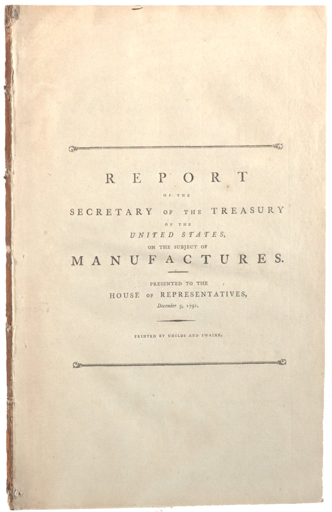
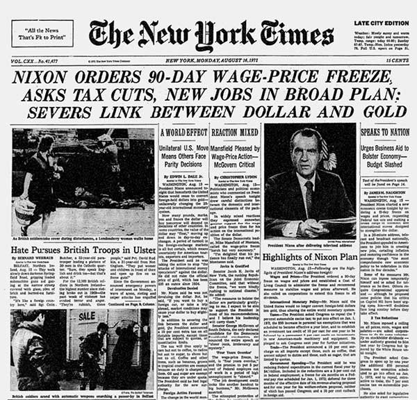

More Than a Tax on Imports
Five things I assumed about tariffs, what the data actually says, and why the real story is more connected (and less scary) than it looks.
Why I'm writing this
I'm a high school senior, not an economist. Almost everything here I learned over a few weeks from textbooks, Federal Reserve research notes, budget reports, and a lot of rabbit holes. So read this as a learning log: what I expected, what the data actually said, and where I'm still confused.
It's also not an argument for or against any politician or party. Smart, well-credentialed people disagree about tariffs, and I'm not in a position to crown a winner. What I can do is try to explain how the machine works. Once you can see the gears, the news looks a lot less random, and honestly a lot less scary.
The plan: five intuitions about tariffs that I had (and I think most people have). For each one, what seems obvious, what the evidence says, and why the real answer is more interesting than either.
First, what's a tariff? It's a tax on imported goods, paid at the border to U.S. Customs by the company bringing the goods in (the "importer of record"). Hold on to that last detail. It matters more than it looks.
Sections marked The math work through the numbers. You can skip them and still follow the story, but they're where each claim gets checked. Click any chart or picture to enlarge it.

1. "Other countries pay the tariff"
Who paysWhat seems obvious: it's a tax on their stuff, so they pay it.
What actually happens: the check is written by an American company to the American government. But economists care about a different question, called tariff incidence: who ends up poorer because of the tax? There are three possible answers, and usually it's a mix:
- The foreign exporter lowers its price to stay competitive.
- The U.S. importer eats the cost out of its profit margin.
- The U.S. consumer pays a higher price at the store.
Here's the cleanest way I've found to see it. A company imports a $100 part, and there's a 25% tariff. If the exporter keeps charging $100, the importer pays $125, and the cost lands on Americans. If the exporter drops its price to $80, the importer pays $80 + $20 tariff = $100, the same as before. In that case the foreign company effectively paid the whole tariff.
Watch it: who actually pays a tariff?
The $100 example, animated (45 seconds)
So which happened in 2025? Researchers can measure this by comparing prices across millions of shipments, and they don't fully agree:
Most studies: Americans paid 90%+ of the 2025 tariffs
Share of the tariff cost borne in the U.S. (blue) vs. absorbed by foreign exporters (grey)
That disagreement is worth slowing down on, because it's what real research looks like. Most studies say Americans paid most of it. At least one careful study says it was closer to a split. And the share isn't fixed: the New York Fed found foreign exporters paid a growing share as 2025 went on, even though Americans still paid most of it.
Whoever can walk away pays less
Let εd be the buyers' demand elasticity (how much they cut purchases when the price rises 1%) and εs the sellers' supply elasticity (how easily sellers can send their goods somewhere else). Then:
In plain English: whoever has fewer alternatives ends up paying. Say a U.S. importer can't easily switch suppliers (εd = 0.5), but the foreign exporter can easily sell to Europe instead (εs = 1.5):
Sanity check: if sellers truly had nowhere else to sell (εs = 0), buyers would pay 0 / (0 + εd) = 0%, and the exporter would eat the whole tariff. That's exactly the argument that the U.S. market is too big to walk away from. The 2025 data suggest that, at least in the short run, most exporters had more options than American buyers did.
Huh, why? If the U.S. is the world's biggest consumer market, why wouldn't exporters just cut prices to keep selling here? Part of the answer seems to be time. In the short run, an importer can't swap suppliers overnight, and an exporter can sometimes sell its goods somewhere else. Over longer periods, those options change, which is one reason the split can shift.
2. "If we tax imports more, the government gets more money"
RevenueWhat seems obvious: higher tax rate × lots of imports = lots of revenue.
The part that's true: revenue really did jump. Customs revenue went from $84 billion in fiscal year 2024 to $202 billion in fiscal year 2025. For the 2025 calendar year, the budget deficit came in at $1.67 trillion, the smallest in three years, and the record customs haul was a big reason.
Customs revenue ran at about 4× its 2024 pace by late 2025
Federal customs duties, billions of dollars at a seasonally adjusted annual rate, quarterly
Running the numbers
quarterly pace: 367 / 89 ≈ 4.1×
share of budget: 202 / 5,235 ≈ 3.9% of federal revenue (FY2025)
For scale: in 1792, customs duties paid for about 95% of the federal government. Tariffs used to be the federal budget. Today they're a meaningful slice, but they can't replace the income tax.
The twists:
- Tariffs shrink their own base. When something gets taxed, people buy less of it. Yale's Budget Lab tracks this with two numbers: the tariff rate on what we used to import, and the rate after people shift what they buy. In November 2025 those were 16.8% and 14.4%. The gap is imports that disappeared, and the revenue that went with them.
- Where the money comes from. If Americans pay most of the tariff (Intuition 1), then much of this revenue is a tax collected from Americans, just through a different door than April 15.
- It's not all staying. After the Supreme Court struck down the tariffs imposed under the emergency-powers law (Intuition 5), about $166 billion became refundable to importers, with interest. Only the importer can claim it. A shopper who paid a higher price can't.
Why a bigger tariff can raise less money
Revenue is rate × base. Let t be the tariff rate and M(t) the value of imports at that rate. The catch is that M shrinks as t grows. In a simple model, imports fall off with an elasticity ε:
To find the tariff that raises the most money, take the derivative and set it to zero:
ε = 3 → revenue peaks at a 50% tariff
Past that point, raising the rate lowers revenue, because the base shrinks faster than the rate grows. It's the same shape as the Laffer curve. Real elasticities differ by product, so this is a toy model, not a forecast. But it shows why "more tax = more money" is only true up to a point.
Toy model: past a point, higher tariffs raise less money
Revenue = t × imports, with imports = 100 × (1 + t)−ε. Illustrative, not a forecast.
3. "Tariffs should help inflation, since we'll spend less"
InflationWhat seems obvious: if imports cost more, people buy less, less spending cools the economy, and prices calm down.
What happened: this one tripped me up. Inflation is the rate at which prices rise. A tariff directly raises the price of the taxed good, and of anything built from imported parts (a U.S.-made washing machine with imported steel inside, for example). So at least at first, it pushes measured inflation up.
The Fed's economists have measured how much:
- A Federal Reserve note estimated that tariffs put in place through November 2025 raised core goods prices by 3.1% through February 2026, enough to explain all of the "excess" goods inflation compared with before the pandemic.
- The Dallas Fed estimated tariffs added about 0.8 percentage points to core inflation as of March 2026. Without them, core inflation would have been around 2.3%, close to the Fed's 2% target.
- The Boston Fed came in lower. Productivity gains partly offset the tariffs, for a net effect of about 0.5 points.
A step, not a ramp
Call the price level P and normal inflation π. Each year, P gets multiplied by (1 + π). A tariff adds a one-time bump s:
So in year 1, measured inflation ≈ π + s. In year 2 it goes back to π. Plug in the Dallas Fed's numbers:
actual, from the core PCE price index: 129.030 / 125.144 − 1 = 3.1% ✓
The catch: prices don't come back down. In year 2, inflation returns to normal, but everything stays about 0.8% more expensive than it otherwise would have been. A step is permanent. It just stops climbing.
Core inflation: 3.1% actual vs. ~2.3% without tariffs (Mar 2026)
Core PCE prices, % change from a year earlier, monthly
So the intuition isn't completely crazy. Higher prices can reduce what people can afford, which does cool demand a little. That's one reason the Fed treats tariff price bumps carefully instead of slamming on the brakes. But "tariffs lower inflation" isn't what the data shows.
4. "Tariffs make the dollar stronger"
The dollarWhat the textbook says: if Americans buy fewer imports, they need fewer euros, yen, and yuan, so they sell fewer dollars. Less selling means a stronger dollar. Some models predict the dollar rises enough to cancel out part of the tariff.
What happened: the opposite. The U.S. dollar index fell 10.8% in the first half of 2025, its worst first half since 1973, the year currencies started floating freely.
What the textbook expected vs. what happened
The dollar price of an imported good is the foreign price p*, times the exchange rate e (dollars per unit of foreign currency), times one plus the tariff:
Textbook case: a 10% tariff, and the dollar strengthens 10%, so each euro costs 1/1.10 as many dollars:
What actually happened (illustration): the euro rose 13.8% against the dollar in the first half of 2025. A €100 good facing a 10% tariff:
The currency move stacked on top of the tariff instead of canceling it. (10% is just an example rate; actual rates on EU goods changed during the year.)
The dollar fell ~7% in early 2025 instead of rising
Fed broad trade-weighted dollar index (Jan 2006 = 100), monthly average. Textbook prediction: up.
Huh, why? This was my favorite moment of the whole project. The textbook model isn't wrong, but it only covers trade flows, and trade is a small part of what moves a currency. Every day, investors and central banks decide where to keep trillions of dollars of savings, and exchange rates move with their confidence: in growth, policy, debt, and institutions. Analysts at S&P Global pointed to tariffs, worries about the Fed's independence, rising U.S. debt, and inflation fears all together.
To keep this in proportion: even after the drop, S&P noted the dollar was still more than 15% above its long-run average in real terms. And a weaker dollar isn't automatically bad news. It makes American exports cheaper for the rest of the world, which is part of what tariff supporters wanted in the first place.
The bigger lesson: a currency is closer to a vote of confidence than a scoreboard of trade. That idea sets up the deepest part of this story.
5. "This is all arbitrary"
History, ideas, and lawIt can feel that way watching the news: rates announced, paused, raised, struck down. But the more I dug, the more it looked like a very old argument, now running through a very rule-bound system.
1791: Hamilton's blueprint
The tariff debate is as old as the country. The first major tariff, in 1789, was about 5% on most goods and 7.5–10% on some luxury and manufactured items. In 1791, Treasury Secretary Alexander Hamilton sent Congress his Report on Manufactures, a plan for turning a farming nation into an industrial one.


Hamilton supported moderate tariffs, but his favorite tool was bounties, direct subsidies to new industries. In his own words: "Bounties have not like high protecting duties, a tendency to produce scarcity." A subsidy helps the factory without raising prices on shoppers. The irony is that Congress adopted nearly all of Hamilton's tariff proposals in 1792 and rejected the bounties.
Today: the case for tariffs, at its strongest
Peter Navarro, the president's trade adviser, often cites Hamilton. The best version of his argument, as I understand it:
- The playing field isn't level. Free-trade theory assumes fair competition. If a foreign government subsidizes its factories to undercut yours, a small tariff won't protect an industry you need in a war.
- Supply chains are national security. Assembling something in America out of foreign steel and foreign chips doesn't make you resilient.
- Tariffs are leverage. The threat of losing access to the American market can pull other countries to the negotiating table.
You don't have to agree with the tools to see that these concerns are real, and that they're about security and resilience, not just money.

The puzzle underneath: Triffin's dilemma
In 1960, economist Robert Triffin warned Congress about a trap. The dollar had become the world's reserve currency, backed by gold. To supply the world with dollars, the U.S. had to send more of them abroad than it brought home, until there were more dollars overseas than gold to back them. In 1971 that's exactly what happened: President Nixon ended the dollar's convertibility to gold.


Stephen Miran, who has advised the administration, argues a modern version of Triffin still applies. In this view, global demand for dollars keeps the currency overvalued, which makes American exports expensive and wears down manufacturing. If that's right, trade deficits are partly a side effect of the dollar's global role, not just a sign of bad trade deals.
But plenty of economists push back hard:
- Michael Bordo and Robert McCauley argue that foreign central banks no longer drive U.S. deficits, so we're not really in "Triffin land" anymore.
- Others point out that during Bretton Woods, when you'd expect this effect to be strongest, the U.S. never ran a significant current account deficit.
- Dollars can flow abroad through investment instead of trade. And some argue the real issue is persistent government budget deficits, not the reserve role itself.
I can't settle that debate, and it seems nobody has yet. But it's the clearest example of what I mean by global implications. A tax on imported steel connects to the price of U.S. government debt, the world's demand for dollars, and how 1971 played out.
Watch it: Triffin's dilemma
Gold drains, dollars pile up abroad, and the gold window closes (70 seconds)
The rules are working
The last thing that made this feel less arbitrary to me: the system has checks, and they visibly worked.
- The Constitution gives Congress the power to tax, including tariffs. Presidents set tariffs under laws Congress has passed.
- On February 20, 2026, the Supreme Court ruled 6–3 that the emergency-powers law (IEEPA) doesn't authorize tariffs at all.
- The administration switched to a different law, Section 122 of the Trade Act of 1974, for a temporary global tariff. That law caps such a tariff at 150 days, so it expired on July 24, 2026.
- The same day, new tariffs of 10–12.5% on 60 economies took effect under Section 301, a law with its own procedures and its own legal challenges.

Average U.S. tariff rate: ~3% → 18% → about 11% today
Yale Budget Lab average effective / statutory tariff rate, %
You can think that's good policy or bad policy. Either way, it isn't chaos. It's laws, courts, deadlines, and refunds, all on the public record.
So did the factories come back?
The scoreboardThis is the question everything else is in service of, and the honest answer is: mixed, and too early to call.
- Factory jobs were already falling before the tariffs: from January 2024 to January 2025, the U.S. lost about 202,000 manufacturing jobs.
- From April 2025 to February 2026, it lost about 79,000 more.
- After bottoming at 12.58 million in December 2025, factories added about 58,000 jobs through August 2026.
- Net change from January 2025 to August 2026: about −35,000.
Factory jobs fell before and after the tariffs, then regained 58,000
U.S. manufacturing employment, millions, seasonally adjusted, monthly (latest revised data)
What's causing what is disputed. Some economists say factory jobs follow overall demand and the economy, not tariffs. Supporters point to gains in metals and transportation manufacturing. And there's a deeper pattern underneath: by mid-2026, factory output was growing even while payrolls weren't. Modern factories can make more with fewer people. That means "bringing manufacturing back" and "bringing manufacturing jobs back" might not be the same goal, which is a whole other article.
Building a factory takes years, not months. If tariffs or the 2025 tax incentives for domestic investment work, a lot of the evidence won't show up until 2027 or later.
A lesson about data: numbers get revised. When I first researched this, news articles said factories had lost 89,000 jobs since April 2025 and were 62,000 below January 2025. The current Bureau of Labor Statistics data show smaller losses (79,000 and 35,000). Nobody lied. The BLS revises its estimates as better survey data come in, especially in its yearly benchmark revision. Always use the latest data, and say when you pulled it.
Why I'm hopeful anyway
Not because any of this is perfect. I'm hopeful because of what I found while trying to understand it.
The economy is legible. Within months of the 2025 tariffs, researchers had gone through tens of millions of shipment records and estimated who paid. Within a year, the Fed could estimate what tariffs did to inflation, almost to the decimal. We're not flying blind, and anyone with an internet connection can pull up the same data I used for every chart on this page.
The disagreements are about tools, not goals. Hamilton, Navarro, and the economists who criticize them all want a strong, secure country that makes things. They disagree about whether tariffs, subsidies, or something else gets you there. That's a debate you can actually have with evidence.
Price shocks fade. A tariff mostly raises prices once. It doesn't lock in permanent inflation, and the Fed knows that.
The rules held. Courts ruled, laws had deadlines, deadlines were met, and money went back to the people who were owed it. Whatever you think of the outcome, the process worked the way it's supposed to.
Understanding replaces fear. "Tariffs" sounded like one simple lever to me. It turns out to be connected to the price of my groceries, the strength of the dollar, a gold crisis in 1971, and a debate from 1791. That's not depressing. It's one of the coolest systems I've ever looked at, and I'm going to keep studying it.
What I still don't know
- Why didn't foreign exporters cut prices more? I understand the theory but not the industry details.
- Is the modern Triffin argument right? Smart people are split, and I'd need to understand capital flows much better to judge.
- Will the investment incentives and tariffs show up as new factories by 2028? Nobody knows yet.
- What happens to tariff policy as the Section 301 cases work through the courts?
What I'm reading next: Douglas Irwin's Clashing over Commerce, the standard history of U.S. trade policy, and Hamilton's actual Report on Manufactures, which is free on Founders Online.
Sources
Chart data pulled from FRED (Federal Reserve Bank of St. Louis) on November 18, 2026.
- Federal Reserve, Detecting Tariff Effects on Consumer Prices in Real Time, Part II (Apr 2026)
- Dallas Fed, Effects of realized tariff changes on PCE prices (May 2026)
- Boston Fed, tariffs, productivity, and core inflation (2026)
- PIIE, Who pays for tariffs? Insights from recent research (2026)
- Tax Foundation, on Caroline Freund's estimate (2026)
- Yale Budget Lab, State of U.S. Tariffs reports and open data
- Bloomberg, Dollar index's biggest first-half loss since 1973 (Jun 2025)
- S&P Global, The dollar after its worst six months in decades (Jul 2025)
- Douglas Irwin, The Aftermath of Hamilton's "Report on Manufactures" (NBER)
- VoxEU, Not Triffin, not Miran
- Council on Foreign Relations, After the Supreme Court ruling (Feb 2026)
- American Bar Association, IEEPA tariffs struck down, replacement tariffs expired (Fall 2026)
- FRED series: MANEMP, DTWEXBGS, PCEPILFE, B235RC1Q027SBEA
Plus qu'une taxe sur les importations
Cinq choses que je croyais sur les droits de douane, ce que disent vraiment les données, et pourquoi la vraie histoire est plus connectée (et moins effrayante) qu'elle n'en a l'air.
Pourquoi j'écris ceci
Je suis en terminale, pas économiste. Presque tout ce qui suit, je l'ai appris en quelques semaines, grâce à des manuels, des notes de recherche de la Réserve fédérale, des rapports budgétaires et beaucoup de recherches qui m'ont mené de fil en aiguille. Lisez donc ceci comme un journal d'apprentissage : ce à quoi je m'attendais, ce que les données ont vraiment montré, et ce qui m'échappe encore.
Ce n'est pas non plus un plaidoyer pour ou contre un responsable politique ou un parti. Des gens brillants et reconnus ne sont pas d'accord sur les droits de douane, et je ne suis pas en position de désigner un gagnant. Ce que je peux faire, c'est essayer d'expliquer comment fonctionne la machine. Une fois qu'on voit les engrenages, l'actualité paraît beaucoup moins aléatoire et, honnêtement, beaucoup moins effrayante.
Le plan : cinq intuitions sur les droits de douane que j'avais (et que, je crois, la plupart des gens ont). Pour chacune : ce qui semble évident, ce que disent les données, et pourquoi la vraie réponse est plus intéressante que l'un ou l'autre.
D'abord, qu'est-ce qu'un droit de douane ? C'est une taxe sur les biens importés, payée à la frontière aux douanes américaines par l'entreprise qui fait entrer la marchandise (l'« importateur officiel »). Retenez ce dernier détail : il compte plus qu'il n'y paraît.
Les sections marquées Les maths détaillent les calculs. Vous pouvez les sauter et suivre quand même l'histoire, mais c'est là que chaque affirmation est vérifiée. Cliquez sur un graphique ou une image pour l'agrandir.
1. « Ce sont les autres pays qui paient le droit de douane »
Qui paieCe qui semble évident : c'est une taxe sur leurs produits, donc ce sont eux qui la paient.
Ce qui se passe vraiment : le chèque est signé par une entreprise américaine, à l'ordre du gouvernement américain. Mais les économistes s'intéressent à une autre question, appelée incidence fiscale : qui finit appauvri par la taxe ? Il y a trois réponses possibles, et c'est généralement un mélange :
- L'exportateur étranger baisse son prix pour rester compétitif.
- L'importateur américain absorbe le coût sur sa marge.
- Le consommateur américain paie plus cher en magasin.
Voici la façon la plus claire que j'ai trouvée pour le voir. Une entreprise importe une pièce à 100 $, et il y a un droit de douane de 25 %. Si l'exportateur continue de la vendre 100 $, l'importateur paie 125 $, et le coût retombe sur les Américains. Si l'exportateur baisse son prix à 80 $, l'importateur paie 80 $ + 20 $ de droit = 100 $, comme avant. Dans ce cas, c'est l'entreprise étrangère qui a, en pratique, payé tout le droit de douane.
À voir : qui paie vraiment un droit de douane ?
L'exemple des 100 $, en animation (45 secondes, en anglais)
Alors, que s'est-il passé en 2025 ? Les chercheurs peuvent le mesurer en comparant les prix de millions d'envois, et ils ne sont pas entièrement d'accord :
La plupart des études : les Américains ont payé plus de 90 % des droits de 2025
Part du coût des droits de douane supportée aux États-Unis (bleu) ou absorbée par les exportateurs étrangers (gris)
Ce désaccord mérite qu'on s'y arrête, parce que c'est à cela que ressemble la vraie recherche. La plupart des études disent que les Américains en ont payé l'essentiel. Au moins une étude rigoureuse parle plutôt d'un partage. Et la part n'est pas figée : la Fed de New York a constaté que les exportateurs étrangers en ont payé une part croissante au fil de 2025, même si les Américains en payaient toujours la majorité.
Celui qui peut partir paie moins
Soit εd l'élasticité de la demande des acheteurs (de combien ils réduisent leurs achats quand le prix augmente de 1 %) et εs l'élasticité de l'offre des vendeurs (avec quelle facilité ils peuvent vendre ailleurs). Alors :
Autrement dit : celui qui a le moins d'alternatives finit par payer. Imaginons qu'un importateur américain ne puisse pas facilement changer de fournisseur (εd = 0,5), mais que l'exportateur étranger puisse facilement vendre en Europe à la place (εs = 1,5) :
Vérification : si les vendeurs n'avaient vraiment nulle part ailleurs où vendre (εs = 0), les acheteurs paieraient 0 / (0 + εd) = 0 %, et l'exportateur absorberait tout le droit de douane. C'est exactement l'argument selon lequel le marché américain est trop grand pour qu'on y renonce. Les données de 2025 suggèrent qu'au moins à court terme, la plupart des exportateurs avaient plus d'options que les acheteurs américains.
Tiens, pourquoi ? Si les États-Unis sont le plus grand marché de consommation du monde, pourquoi les exportateurs ne baisseraient-ils pas simplement leurs prix pour continuer à y vendre ? Une partie de la réponse semble être le temps. À court terme, un importateur ne peut pas changer de fournisseur du jour au lendemain, et un exportateur peut parfois vendre ses produits ailleurs. Sur de plus longues périodes, ces options évoluent, ce qui explique en partie pourquoi le partage peut changer.
2. « Si on taxe davantage les importations, l'État gagne plus d'argent »
RecettesCe qui semble évident : taux de taxe plus élevé × beaucoup d'importations = beaucoup de recettes.
La part de vrai : les recettes ont vraiment bondi. Les recettes douanières sont passées de 84 milliards de dollars sur l'exercice 2024 à 202 milliards sur l'exercice 2025. Pour l'année civile 2025, le déficit budgétaire s'est établi à 1 670 milliards de dollars, le plus faible depuis trois ans, et les recettes douanières record y étaient pour beaucoup.
Fin 2025, les recettes douanières tournaient à environ 4 fois leur rythme de 2024
Droits de douane fédéraux, en milliards de dollars, en rythme annuel corrigé des variations saisonnières, par trimestre
Les calculs
rythme trimestriel : 367 / 89 ≈ 4,1×
part du budget : 202 / 5 235 ≈ 3,9 % des recettes fédérales (exercice 2025)
Pour donner l'échelle : en 1792, les droits de douane finançaient environ 95 % de l'État fédéral. Les droits de douane étaient autrefois le budget fédéral. Aujourd'hui, ils en représentent une part non négligeable, mais ils ne peuvent pas remplacer l'impôt sur le revenu.
Les rebondissements :
- Les droits de douane réduisent leur propre base. Quand on taxe quelque chose, les gens en achètent moins. Le Budget Lab de Yale suit cela avec deux chiffres : le taux des droits sur ce que nous importions avant, et le taux une fois que les gens ont modifié leurs achats. En novembre 2025, ils étaient de 16,8 % et 14,4 %. L'écart correspond aux importations qui ont disparu, et aux recettes qui sont parties avec elles.
- D'où vient l'argent. Si les Américains paient l'essentiel du droit de douane (intuition 1), alors une grande partie de ces recettes est un impôt prélevé sur les Américains, simplement par une autre porte que la déclaration de revenus.
- Tout ne reste pas. Après que la Cour suprême a annulé les droits imposés en vertu de la loi sur les pouvoirs d'urgence (intuition 5), environ 166 milliards de dollars sont devenus remboursables aux importateurs, avec intérêts. Seul l'importateur peut les réclamer. Un client qui a payé plus cher ne le peut pas.
Pourquoi un droit plus élevé peut rapporter moins
Les recettes, c'est le taux × la base. Soit t le taux du droit de douane et M(t) la valeur des importations à ce taux. Le piège, c'est que M diminue quand t augmente. Dans un modèle simple, les importations baissent avec une élasticité ε :
Pour trouver le droit qui rapporte le plus, on dérive et on égale à zéro :
ε = 3 → recettes maximales avec un droit de 50 %
Au-delà de ce point, augmenter le taux réduit les recettes, parce que la base diminue plus vite que le taux n'augmente. C'est la même forme que la courbe de Laffer. Les élasticités réelles varient selon les produits ; c'est donc un modèle simplifié, pas une prévision. Mais il montre pourquoi « plus de taxes = plus d'argent » n'est vrai que jusqu'à un certain point.
Modèle simplifié : au-delà d'un certain point, des droits plus élevés rapportent moins
Recettes = t × importations, avec importations = 100 × (1 + t)−ε. Illustration, pas une prévision.
3. « Les droits de douane devraient freiner l'inflation, puisqu'on dépensera moins »
InflationCe qui semble évident : si les importations coûtent plus cher, les gens achètent moins, moins de dépenses refroidit l'économie, et les prix se calment.
Ce qui s'est passé : celle-ci m'a piégé. L'inflation, c'est le rythme auquel les prix augmentent. Un droit de douane augmente directement le prix du bien taxé, et de tout ce qui est fabriqué avec des pièces importées (par exemple, une machine à laver fabriquée aux États-Unis avec de l'acier importé). Donc, au moins au début, il fait monter l'inflation mesurée.
Les économistes de la Fed ont mesuré de combien :
- Une note de la Réserve fédérale estime que les droits de douane mis en place jusqu'en novembre 2025 ont augmenté les prix des biens (hors alimentation et énergie) de 3,1 % jusqu'en février 2026, assez pour expliquer tout l'« excès » d'inflation des biens par rapport à l'avant-pandémie.
- La Fed de Dallas estime que les droits de douane ont ajouté environ 0,8 point de pourcentage à l'inflation sous-jacente en mars 2026. Sans eux, elle aurait été d'environ 2,3 %, proche de la cible de 2 % de la Fed.
- La Fed de Boston arrive à un chiffre plus bas : les gains de productivité ont en partie compensé les droits, pour un effet net d'environ 0,5 point.
Une marche, pas une rampe
Appelons P le niveau des prix et π l'inflation normale. Chaque année, P est multiplié par (1 + π). Un droit de douane ajoute une hausse ponctuelle s :
Donc la première année, l'inflation mesurée ≈ π + s. La deuxième année, elle revient à π. Avec les chiffres de la Fed de Dallas :
réelle, d'après l'indice des prix PCE sous-jacent : 129,030 / 125,144 − 1 = 3,1 % ✓
Le piège : les prix ne redescendent pas. La deuxième année, l'inflation revient à la normale, mais tout reste environ 0,8 % plus cher qu'il ne l'aurait été. Une marche est permanente. Elle arrête simplement de monter.
Inflation sous-jacente : 3,1 % réelle contre ~2,3 % sans droits de douane (mars 2026)
Prix PCE hors alimentation et énergie, variation sur un an en %, mensuel
L'intuition n'est donc pas complètement absurde. Des prix plus élevés peuvent réduire ce que les gens peuvent se permettre, ce qui refroidit un peu la demande. C'est l'une des raisons pour lesquelles la Fed traite les hausses de prix liées aux droits avec prudence au lieu de freiner brutalement. Mais « les droits de douane font baisser l'inflation », ce n'est pas ce que montrent les données.
4. « Les droits de douane renforcent le dollar »
Le dollarCe que dit le manuel : si les Américains achètent moins de produits importés, ils ont besoin de moins d'euros, de yens et de yuans, donc ils vendent moins de dollars. Moins de ventes, c'est un dollar plus fort. Certains modèles prédisent que le dollar monte assez pour annuler une partie du droit de douane.
Ce qui s'est passé : l'inverse. L'indice du dollar américain a chuté de 10,8 % au premier semestre 2025, son pire premier semestre depuis 1973, l'année où les monnaies ont commencé à flotter librement.
Ce que prévoyait le manuel, et ce qui s'est passé
Le prix en dollars d'un bien importé, c'est le prix étranger p*, multiplié par le taux de change e (dollars par unité de devise étrangère), multiplié par un plus le droit de douane :
Le cas du manuel : un droit de 10 %, et le dollar se renforce de 10 %, donc un euro ne coûte plus que 1/1,10 de ce qu'il coûtait en dollars :
Ce qui s'est réellement passé (illustration) : l'euro a pris 13,8 % face au dollar au premier semestre 2025. Pour un bien à 100 € soumis à un droit de 10 % :
Le mouvement de la monnaie s'est ajouté au droit de douane au lieu de l'annuler. (10 % n'est qu'un exemple ; les taux réels sur les produits européens ont changé au cours de l'année.)
Le dollar a baissé d'environ 7 % début 2025 au lieu de monter
Indice large du dollar pondéré par les échanges de la Fed (janv. 2006 = 100), moyenne mensuelle. Prévision du manuel : à la hausse.
Tiens, pourquoi ? C'est mon moment préféré de tout le projet. Le modèle du manuel n'est pas faux, mais il ne couvre que les flux commerciaux, et le commerce n'est qu'une petite partie de ce qui fait bouger une monnaie. Chaque jour, des investisseurs et des banques centrales décident où placer des milliers de milliards de dollars d'épargne, et les taux de change suivent leur confiance : dans la croissance, la politique économique, la dette et les institutions. Les analystes de S&P Global ont pointé à la fois les droits de douane, les inquiétudes sur l'indépendance de la Fed, la hausse de la dette américaine et les craintes d'inflation.
Pour garder le sens des proportions : même après cette baisse, S&P notait que le dollar restait plus de 15 % au-dessus de sa moyenne de long terme en termes réels. Et un dollar plus faible n'est pas forcément une mauvaise nouvelle : il rend les exportations américaines moins chères pour le reste du monde, ce qui fait partie de ce que voulaient les partisans des droits de douane.
La leçon plus large : une monnaie ressemble davantage à un vote de confiance qu'à un tableau des scores du commerce. Cette idée prépare la partie la plus profonde de cette histoire.
5. « Tout cela est arbitraire »
Histoire, idées et droitOn peut avoir cette impression en regardant l'actualité : des taux annoncés, suspendus, relevés, annulés. Mais plus je creusais, plus cela ressemblait à un débat très ancien, qui passe aujourd'hui par un système très encadré par des règles.
1791 : le plan de Hamilton
Le débat sur les droits de douane est aussi vieux que le pays. Le premier grand tarif douanier, en 1789, était d'environ 5 % sur la plupart des biens et de 7,5 à 10 % sur certains produits de luxe et manufacturés. En 1791, le secrétaire au Trésor Alexander Hamilton a remis au Congrès son Rapport sur les manufactures, un plan pour transformer une nation agricole en nation industrielle.
Hamilton soutenait des droits de douane modérés, mais son outil préféré était les primes, des subventions directes aux nouvelles industries. Selon ses propres mots : « Bounties have not like high protecting duties, a tendency to produce scarcity » (contrairement aux droits protecteurs élevés, les primes n'ont pas tendance à créer la pénurie). Une subvention aide l'usine sans augmenter les prix pour les acheteurs. L'ironie, c'est que le Congrès a adopté presque toutes les propositions douanières de Hamilton en 1792 et rejeté les primes.
Aujourd'hui : les arguments en faveur des droits de douane, sous leur meilleur jour
Peter Navarro, conseiller au commerce du président, cite souvent Hamilton. La meilleure version de son argument, telle que je la comprends :
- Les règles du jeu ne sont pas équitables. La théorie du libre-échange suppose une concurrence loyale. Si un gouvernement étranger subventionne ses usines pour casser vos prix, un petit droit de douane ne protégera pas une industrie dont vous auriez besoin en cas de guerre.
- Les chaînes d'approvisionnement relèvent de la sécurité nationale. Assembler quelque chose en Amérique avec de l'acier et des puces étrangers ne vous rend pas résilient.
- Les droits de douane sont un levier. La menace de perdre l'accès au marché américain peut amener d'autres pays à la table des négociations.
Pas besoin d'être d'accord avec les outils pour voir que ces préoccupations sont réelles, et qu'elles portent sur la sécurité et la résilience, pas seulement sur l'argent.
L'énigme de fond : le dilemme de Triffin
En 1960, l'économiste Robert Triffin a averti le Congrès d'un piège. Le dollar était devenu la monnaie de réserve mondiale, adossée à l'or. Pour fournir des dollars au monde, les États-Unis devaient en envoyer à l'étranger plus qu'ils n'en faisaient revenir, jusqu'à ce qu'il y ait plus de dollars à l'étranger que d'or pour les garantir. C'est exactement ce qui s'est passé en 1971 : le président Nixon a mis fin à la convertibilité du dollar en or.
Stephen Miran, qui a conseillé l'administration, soutient qu'une version moderne du dilemme de Triffin s'applique encore. Selon cette idée, la demande mondiale de dollars maintient la monnaie surévaluée, ce qui rend les exportations américaines chères et use l'industrie. Si c'est vrai, les déficits commerciaux sont en partie un effet secondaire du rôle mondial du dollar, et pas seulement le signe de mauvais accords commerciaux.
Mais de nombreux économistes contestent fermement cette idée :
- Michael Bordo et Robert McCauley soutiennent que les banques centrales étrangères ne sont plus le moteur des déficits américains, et que nous ne sommes donc plus vraiment « au pays de Triffin ».
- D'autres rappellent que pendant Bretton Woods, quand on s'attendrait à ce que cet effet soit le plus fort, les États-Unis n'ont jamais eu de déficit important de leur balance courante.
- Les dollars peuvent sortir par l'investissement plutôt que par le commerce. Et certains estiment que le vrai problème, ce sont les déficits budgétaires persistants, pas le rôle de monnaie de réserve en lui-même.
Je ne peux pas trancher ce débat, et personne ne semble l'avoir fait encore. Mais c'est l'exemple le plus clair de ce que j'entends par implications mondiales. Une taxe sur l'acier importé est liée au prix de la dette publique américaine, à la demande mondiale de dollars, et à la façon dont 1971 s'est déroulé.
À voir : le dilemme de Triffin
L'or s'épuise, les dollars s'accumulent à l'étranger, et le guichet de l'or se ferme (70 secondes, en anglais)
Les règles fonctionnent
Dernière chose qui a rendu tout cela moins arbitraire à mes yeux : le système a des contre-pouvoirs, et ils ont visiblement fonctionné.
- La Constitution donne au Congrès le pouvoir de lever l'impôt, y compris les droits de douane. Les présidents fixent des droits de douane en vertu de lois votées par le Congrès.
- Le 20 février 2026, la Cour suprême a jugé, par 6 voix contre 3, que la loi sur les pouvoirs d'urgence (IEEPA) n'autorise pas du tout les droits de douane.
- L'administration s'est tournée vers une autre loi, la section 122 du Trade Act de 1974, pour un droit de douane mondial temporaire. Cette loi limite un tel droit à 150 jours ; il a donc expiré le 24 juillet 2026.
- Le même jour, de nouveaux droits de 10 à 12,5 % sur 60 économies sont entrés en vigueur au titre de la section 301, une loi qui a ses propres procédures et ses propres contestations en justice.
Taux moyen des droits de douane américains : ~3 % → 18 % → environ 11 % aujourd'hui
Taux moyen effectif / légal des droits de douane, Budget Lab de Yale, en %
On peut trouver que c'est une bonne ou une mauvaise politique. Dans les deux cas, ce n'est pas le chaos. Ce sont des lois, des tribunaux, des échéances et des remboursements, le tout consigné publiquement.
Alors, les usines sont-elles revenues ?
Le bilanC'est la question que tout le reste sert à éclairer, et la réponse honnête est : mitigé, et trop tôt pour conclure.
- Les emplois industriels reculaient déjà avant les droits de douane : de janvier 2024 à janvier 2025, les États-Unis ont perdu environ 202 000 emplois dans l'industrie manufacturière.
- D'avril 2025 à février 2026, ils en ont perdu environ 79 000 de plus.
- Après un point bas à 12,58 millions en décembre 2025, les usines ont ajouté environ 58 000 emplois jusqu'en août 2026.
- Variation nette de janvier 2025 à août 2026 : environ −35 000.
L'emploi industriel a baissé avant et après les droits de douane, puis a regagné 58 000 postes
Emploi manufacturier américain, en millions, corrigé des variations saisonnières, mensuel (dernières données révisées)
Les causes sont débattues. Certains économistes estiment que l'emploi industriel suit la demande et l'économie dans leur ensemble, pas les droits de douane. Les partisans des droits mettent en avant des gains dans la métallurgie et la fabrication de matériel de transport. Et il y a une tendance plus profonde : à la mi-2026, la production des usines augmentait alors même que les effectifs ne suivaient pas. Les usines modernes produisent plus avec moins de monde. Autrement dit, « faire revenir l'industrie » et « faire revenir les emplois industriels » ne sont peut-être pas le même objectif, ce qui mériterait un article à part entière.
Construire une usine prend des années, pas des mois. Si les droits de douane ou les incitations fiscales de 2025 en faveur de l'investissement national fonctionnent, une grande partie des preuves n'apparaîtra pas avant 2027, voire plus tard.
Une leçon sur les données : les chiffres sont révisés. Quand j'ai commencé mes recherches, la presse indiquait que les usines avaient perdu 89 000 emplois depuis avril 2025 et se trouvaient 62 000 en dessous de janvier 2025. Les données actuelles du Bureau of Labor Statistics montrent des pertes plus faibles (79 000 et 35 000). Personne n'a menti. Le BLS révise ses estimations à mesure que de meilleures données d'enquête arrivent, notamment lors de sa révision annuelle de référence. Utilisez toujours les données les plus récentes, et précisez quand vous les avez récupérées.
Pourquoi je reste optimiste
Pas parce que tout cela est parfait. Je suis optimiste à cause de ce que j'ai découvert en essayant de comprendre.
L'économie est lisible. Quelques mois après les droits de douane de 2025, des chercheurs avaient passé au crible des dizaines de millions de déclarations d'envoi et estimé qui avait payé. En un an, la Fed pouvait estimer l'effet des droits sur l'inflation, presque à la décimale près. Nous ne volons pas à l'aveugle, et n'importe qui avec une connexion Internet peut consulter les données que j'ai utilisées pour chaque graphique de cette page.
Les désaccords portent sur les outils, pas sur les objectifs. Hamilton, Navarro et les économistes qui les critiquent veulent tous un pays fort et sûr, qui fabrique des choses. Ils ne sont pas d'accord sur ce qui permet d'y arriver : les droits de douane, les subventions ou autre chose. C'est un débat qu'on peut vraiment mener avec des preuves.
Les chocs de prix s'estompent. Un droit de douane augmente surtout les prix une seule fois. Il n'installe pas une inflation permanente, et la Fed le sait.
Les règles ont tenu. Les tribunaux ont statué, les lois avaient des échéances, les échéances ont été respectées, et l'argent est revenu à ceux à qui il était dû. Quoi qu'on pense du résultat, le processus a fonctionné comme prévu.
Comprendre remplace la peur. Les « droits de douane » me semblaient être un simple levier. En réalité, ils sont liés au prix de mes courses, à la force du dollar, à une crise de l'or en 1971 et à un débat de 1791. Ce n'est pas déprimant. C'est l'un des systèmes les plus fascinants que j'aie jamais observés, et je vais continuer à l'étudier.
Ce que je ne sais toujours pas
- Pourquoi les exportateurs étrangers n'ont-ils pas baissé davantage leurs prix ? Je comprends la théorie, mais pas les détails propres à chaque secteur.
- L'argument moderne de Triffin est-il juste ? Les avis sont partagés, et il me faudrait bien mieux comprendre les flux de capitaux pour en juger.
- Les incitations à l'investissement et les droits de douane se traduiront-ils par de nouvelles usines d'ici 2028 ? Personne ne le sait encore.
- Que deviendra la politique douanière à mesure que les affaires liées à la section 301 passeront devant les tribunaux ?
Ce que je lis ensuite : Clashing over Commerce de Douglas Irwin, l'ouvrage de référence sur l'histoire de la politique commerciale américaine, et le véritable Rapport sur les manufactures de Hamilton, disponible gratuitement sur Founders Online.
Sources
Données des graphiques récupérées sur FRED (Banque fédérale de réserve de Saint-Louis) le 18 novembre 2026. Les sources ci-dessous sont en anglais.
- Federal Reserve, Detecting Tariff Effects on Consumer Prices in Real Time, Part II (Apr 2026)
- Dallas Fed, Effects of realized tariff changes on PCE prices (May 2026)
- Boston Fed, tariffs, productivity, and core inflation (2026)
- PIIE, Who pays for tariffs? Insights from recent research (2026)
- Tax Foundation, on Caroline Freund's estimate (2026)
- Yale Budget Lab, State of U.S. Tariffs reports and open data
- Bloomberg, Dollar index's biggest first-half loss since 1973 (Jun 2025)
- S&P Global, The dollar after its worst six months in decades (Jul 2025)
- Douglas Irwin, The Aftermath of Hamilton's "Report on Manufactures" (NBER)
- VoxEU, Not Triffin, not Miran
- Council on Foreign Relations, After the Supreme Court ruling (Feb 2026)
- American Bar Association, IEEPA tariffs struck down, replacement tariffs expired (Fall 2026)
- FRED series: MANEMP, DTWEXBGS, PCEPILFE, B235RC1Q027SBEA